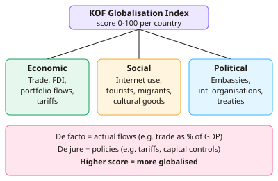

A-level Geography Year 12 · Topic 8
Globalisation
Globalisation is about the growing connections between countries, and who wins and who loses from them.
We will measure globalisation, explain its causes, and study global governance and the global shift.
Then we look at transnational corporations, migration, the impacts of globalisation, and the global commons.
- 8 subtopics
- 295 questions
- Free: 8.1 notes and 10 questions
In this topic
- 8.1Globalisation: features, measurement and indicesFree below · 42 questions
- 8.2Causes of globalisation: technology, trade liberalisation, deregulation and transportOpen in Full Marks · 35 questions
- 8.3Global systems and governance: flows, interdependence, WTO, IMF, World Bank and trade blocsOpen in Full Marks · 41 questions
- 8.4Global shift: newly industrialised countries and changing economic geographyOpen in Full Marks · 35 questions
- 8.5Transnational corporations: role, outsourcing and impacts on economiesOpen in Full Marks · 33 questions
- 8.6Migration and globalisation: flows, causes and consequencesOpen in Full Marks · 31 questions
- 8.7Impacts of globalisation: economic, social, cultural and environmental winners and losersOpen in Full Marks · 36 questions
- 8.8Global commons, sustainability and responses: Antarctica, ethical consumption and resistanceOpen in Full Marks · 42 questions
8.1 · Free notes
Globalisation: features, measurement and indices

Key points
- Globalisation is the increasing interconnectedness of countries through growing flows of goods, services, capital, people and ideas/information. It makes economies, societies and politics more interdependent.
- Key features: growth of world trade, foreign direct investment (FDI), transnational corporations (TNCs) and global production networks, plus rising migration, tourism and use of the internet.
- Global shift is the relocation of manufacturing from HICs to NICs and emerging economies (e.g. China, Vietnam, Bangladesh). It is driven by lower labour costs and access to new markets.
- Time–space compression (Harvey) describes the 'shrinking world'. Transport and ICT reduce the time and cost of moving goods and information, so distance matters less.
- The KOF Globalisation Index (ETH Zurich) scores countries from 0–100 across three dimensions: economic (trade, FDI), social (internet use, tourism, migrants) and political (embassies, treaties, membership of international organisations).
- KOF separates de facto globalisation (actual flows, e.g. trade as % of GDP) from de jure globalisation (policies and rules, e.g. tariffs and capital controls). A country can score differently on each.
- Other measures: the A.T. Kearney/Foreign Policy Index (economic integration, personal contact, technological connectivity, political engagement) and the Maastricht Globalisation Index. Single indicators include trade as % of GDP, FDI inflows, international tourist arrivals, internet users and remittances.
- Trade as % of GDP = (exports + imports) ÷ GDP × 100. A higher percentage shows greater economic integration into the global economy.
- Limitations of indices: variables and weightings are subjective, data quality varies between countries, national averages hide inequality within countries, and informal or illegal flows are missed.
- Globalisation creates winners and losers. 'Switched-on' places (e.g. global cities, Singapore) are highly connected, while 'switched-off' places (e.g. some landlocked LICs) have few links to global flows.
- Glocalisation is the adaptation of global products to local cultures (e.g. McDonald's menus in India). It challenges the view that globalisation simply causes cultural homogenisation.
- Exam tip: when asked to 'assess' or 'evaluate' a measure, give a strength and a limitation, and quote data (index scores, % of GDP) with units.
In more detail
- KOF Index: small, open European countries such as Switzerland, the Netherlands and Belgium score around 90; the least connected countries, such as Somalia and Eritrea, score far lower.
- Worked trade openness: exports £600 billion + imports £700 billion with GDP £2500 billion → 52% of GDP.
- Glocalisation: McDonald's sells the McAloo Tikki in India, adapting a global brand to local tastes.
- Switched-off places: North Korea and remote rural areas with little infrastructure barely take part.
Practice
Globalisation: features, measurement and indices: 10 questions
Pick an answer to check it, or open the answer for the explanation.
1. Which definition best describes globalisation?
- Growth of an economy through protectionism
- Growing interdependence via flows of goods, capital, people and ideas
- Loss of all cultural differences between nations
- Movement of industry from rural to urban areas
Show answer
B: Growing interdependence via flows of goods, capital, people and ideas. Globalisation is increasing interconnectedness and interdependence between countries through flows of goods, capital, people and information. The other options describe different processes.
2. The KOF Globalisation Index measures which three dimensions?
- Technological, ecological and political
- Economic, military and cultural
- Trade, aid and migration
- Economic, social and political
Show answer
D: Economic, social and political. The KOF Index, from ETH Zurich, combines economic, social and political dimensions into a score from 0 to 100, using de facto and de jure measures.
3. A country has exports of $240bn, imports of $160bn and GDP of $800bn. What is trade as a percentage of GDP?
- 30%
- 10%
- 50%
- 100%
Show answer
C: 50%. Trade = exports + imports = $400bn. $400bn ÷ $800bn × 100 = 50%. 30% uses exports only, and 10% uses net exports.
4. 'Global shift' refers to the:
- Relocation of manufacturing from HICs to NICs and emerging economies
- Movement of people from cities to rural areas
- Change in the world's climate zones
- Shift of political power to the UN
Show answer
A: Relocation of manufacturing from HICs to NICs and emerging economies. Global shift is the redistribution of manufacturing, often by TNCs seeking lower labour costs, from HICs to NICs and emerging economies such as China and Vietnam.
5. A country scores high on de facto but low on de jure economic globalisation. This most likely means it has:
- No trade of any kind
- Open policies and large actual trade
- Large actual trade but restrictive trade policies
- Few trade flows but very open policies
Show answer
C: Large actual trade but restrictive trade policies. De facto measures actual flows and de jure measures policies and rules. High de facto with low de jure means lots of trade despite tariffs or controls.
6. Which is a valid criticism of composite indices such as the KOF Index?
- Weightings are subjective and national averages hide inequality
- They contain no economic variables
- They use data from just one country
- They measure only military power
Show answer
A: Weightings are subjective and national averages hide inequality. Composite indices rely on subjective choices of variables and weights, and a single national score hides differences between regions and social groups.
7. 'Time–space compression' means that:
- Time zones are being abolished
- Places are physically moving closer together
- Journeys now take longer because of congestion
- Distance matters less as transport and ICT cut travel and contact times
Show answer
D: Distance matters less as transport and ICT cut travel and contact times. Harvey's concept describes the 'shrinking world': faster, cheaper transport and instant communications reduce the effect of distance.
8. Which is an example of foreign direct investment (FDI)?
- A Japanese car firm building a factory in the UK
- A tourist buying a meal in Spain
- A government sending food aid
- A migrant sending money to relatives
Show answer
A: A Japanese car firm building a factory in the UK. FDI is a company investing in physical assets or ownership in another country, such as a factory. Remittances, aid and tourist spending are different flows.
9. In studies of globalisation, 'switched-off' places are those that:
- Have few links to global flows of trade, investment and information
- Have no electricity at all
- Are the main locations of TNC headquarters
- Have the highest KOF scores
Show answer
A: Have few links to global flows of trade, investment and information. Switched-off places, such as remote or landlocked LICs, are poorly connected to global flows. Switched-on places are well connected.
10. A McDonald's menu that includes a McAloo Tikki burger in India is best described as:
- Import substitution
- Deregulation
- Glocalisation
- Protectionism
Show answer
C: Glocalisation. Glocalisation is the adaptation of global products or brands to local tastes and cultures. It shows that globalisation does not simply produce homogenisation.
Keep going in Full Marks
Full Marks has 42 questions on Globalisation: features, measurement and indices (32 more than here), set out in practice levels. You also get notes and 3D models for all 8 subtopics of Globalisation, plus games, timed exams and past papers.
On your exam board
- EdexcelTopic 3: Globalisation
- CambridgeTopic 5: Migration
Not in the AQA and OCR A specifications.